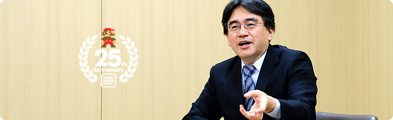
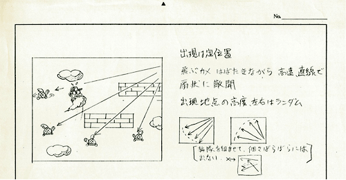

### 「スーパーマリオ２５周年」

<DIV ID="volbox-5"><P CLASS="volnum1"><A CLASS="btn-volnum1" TITLE="社長の代わりに糸井重里さんが訊く" HREF="../vol1/index.html">社長の代わりに糸井重里さんが訊く
<P CLASS="volnum2"><A CLASS="btn-volnum2" TITLE="ファミコンとマリオ 篇" HREF="../vol2/index.html">ファミコンとマリオ 篇
<P CLASS="volnum3"><A CLASS="btn-volnum3" TITLE="『スーパーマリオ』シリーズ開発経験者 篇 その１" HREF="../vol3/index.html">『スーパーマリオ』シリーズ開発経験者 篇 その１
<P CLASS="volnum4"><A CLASS="btn-volnum4" TITLE="『スーパーマリオ』シリーズ開発経験者 篇 その２" HREF="../vol4/index.html">『スーパーマリオ』シリーズ開発経験者 篇 その２
<P CLASS="volnum5"><A CLASS="btn-volnum5s" TITLE="『スーパーマリオ』生みの親たち 篇" HREF="../vol5/index.html">『スーパーマリオ』生みの親たち 篇

<DIV ID="main-visual">
<H2>
<DIV ID="pagebox-wrap">
<DIV CLASS="pagebox">
<P CLASS="pagenum"><A HREF="index.html">1. 十字ボタンを押してジャンプ
<P CLASS="pagenums"><A>2. 入社１年目の新人も
<P CLASS="pagenum"><A HREF="index3.html">3. “集大成”のソフトに
<P CLASS="pagenum"><A HREF="index4.html">4. ２人でいっしょにコースデザイン
<P CLASS="pagenum"><A HREF="index5.html">5. “メモリ減らし”のために
<P CLASS="pagenum"><A HREF="index6.html">6. “スーパーマリオ保存会”
<P CLASS="pagenum"><A HREF="index7.html">7. 京都文化のように

<DIV>

<DIV ID="int-box-wrap">
<H3>
<DIV CLASS="int-box"><DIV CLASS="int-name"><P>宮本
<DIV CLASS="int-text"><P>最初に書いた仕様書の画面の絵には<br>「おじゃま」って書いてあるでしょう。
<DIV CLASS="clear"><DIV CLASS="int-box"><DIV CLASS="int-name"><P>岩田
<DIV CLASS="int-text"><P>ああ、「敵」ではなく、「おじゃま」だったんですよね。<br><SCRIPT LANGUAGE="JavaScript" TYPE="text/javascript">
<!--
	document.write('<A HREF="player.html?width=300&amp;height=380&amp;id=003" CLASS="thickbox 003" TITLE="業務用の『ドンキーコング』"><SPAN>業務用の『ドンキーコング』<'+'/SPAN><'+'/A>');
//-->
</SCRIPT><NOSCRIPT><A HREF="img/slide003.jpg"><SPAN>業務用の『ドンキーコング』</SPAN></NOSCRIPT><sup>（※6）</sup>をファミコンに移植するとき、<br>「おじゃま」という用語を使っていたのをわたしも覚えています。<br>もともとは「じゃまをするもの」だったんですね。
<DIV CLASS="clear"><DIV CLASS="int-box"><DIV CLASS="int-name"><P>宮本
<DIV CLASS="int-text"><P>もともとは「おじゃま虫」なんです。<br>それで、海外スタッフに通訳する際、<br>「おじゃま虫とは、どのような虫なのですか？」と<br>マジメに質問されて、ものすごく困ったことがありました（笑）。
<DIV CLASS="clear"><DIV CLASS="int-box"><DIV CLASS="int-name"><P>岩田
<DIV CLASS="int-text"><P>（笑）
<DIV CLASS="notes-box"><DIV CLASS="notes-num"><P>※6
<DIV CLASS="notes-text"><P>業務用の『ドンキーコング』＝１９８１年に登場したアーケードゲーム。１９８３年にファミコン版が発売。

<DIV CLASS="clear">
<DIV CLASS="clear">

<DIV CLASS="clear">
<DIV CLASS="clear"><DIV CLASS="int-box"><DIV CLASS="int-name"><P>宮本
<DIV CLASS="int-text"><P>そのときは「オブスタクル（obstacle）」と訳されたんです。
<DIV CLASS="clear"><DIV CLASS="int-box"><DIV CLASS="int-name"><P>岩田
<DIV CLASS="int-text"><P>「障害物」ですね。<br>中郷さんの物持ちのよさのおかげで、<br>２５年経ったいまも、いろいろなことがわかりますね（笑）。
<DIV CLASS="clear"><DIV CLASS="int-box"><DIV CLASS="int-name"><P>中郷
<DIV CLASS="int-text"><P>さっき、空を飛ぶ話がありましたけど、<br>これがそのときの仕様書なんです。
<DIV CLASS="clear"><DIV CLASS="img-photo-500px">
<DIV CLASS="int-box"><DIV CLASS="int-name"><P>岩田
<DIV CLASS="int-text"><P>へえ〜、この時点ではロケットではなく、<br>きんと雲にマリオが乗ってますね。<br>これはいつ頃に書かれたものなんですか？<br>日付のハンコがありませんけど。
<DIV CLASS="clear"><DIV CLASS="int-box"><DIV CLASS="int-name"><P>中郷
<DIV CLASS="int-text"><P>最初の仕様書よりはもちろん後ですが・・・。
<DIV CLASS="clear"><DIV CLASS="int-box"><DIV CLASS="int-name"><P>宮本
<DIV CLASS="int-text"><P>これ、手塚さんの絵ですね。
<DIV CLASS="clear"><DIV CLASS="int-box"><DIV CLASS="int-name"><P>手塚
<DIV CLASS="int-text"><P>そう、日付を書いてないので、たぶん僕のです。
<DIV CLASS="clear"><DIV CLASS="int-box"><DIV CLASS="int-name"><P>岩田
<DIV CLASS="int-text"><P>なるほど、そこに性格が出るんですね（笑）。
<DIV CLASS="clear"><DIV CLASS="int-box"><DIV CLASS="int-name"><P>手塚
<DIV CLASS="int-text"><P>ふふふ（笑）。
<DIV CLASS="clear"><DIV CLASS="int-box"><DIV CLASS="int-name"><P>宮本
<DIV CLASS="int-text"><P>手塚さんは当時新人だったんですけど、<br>好きなことを言うんですよ。<br>「雲に乗って自由に空を飛びたい」とか。<br>ですから<br>「それがしたいのやったら、自分でちゃんと描いてみて」と。
<DIV CLASS="clear"><DIV CLASS="int-box"><DIV CLASS="int-name"><P>岩田
<DIV CLASS="int-text"><P>それで書いてもらったのがこの仕様書なんですね。
<DIV CLASS="clear"><DIV CLASS="int-box"><DIV CLASS="int-name"><P>中郷
<DIV CLASS="int-text"><P>最終的に空を飛ぶ仕様はなくなってしまいましたけど。
<DIV CLASS="clear"><DIV CLASS="int-box"><DIV CLASS="int-name"><P>岩田
<DIV CLASS="int-text"><P>当時、新人だったという手塚さんは<br>ファミコンが出た翌年の１９８４年の４月入社ですよね。
<DIV CLASS="clear"><DIV CLASS="int-box"><DIV CLASS="int-name"><P>手塚
<DIV CLASS="int-text"><P>はい。近藤さんといっしょに入社しましたので。
<DIV CLASS="clear"><DIV CLASS="int-box"><DIV CLASS="int-name"><P>岩田
<DIV CLASS="int-text"><P>おふたりは同期なんですよね。
<DIV CLASS="clear"><DIV CLASS="img-photo">
<DIV CLASS="int-box"><DIV CLASS="int-name"><P>近藤
<DIV CLASS="int-text"><P>そうです。
<DIV CLASS="clear"><DIV CLASS="int-box"><DIV CLASS="int-name"><P>岩田
<DIV CLASS="int-text"><P>ということは、入社２年目のときに<br>『スーパーマリオ』が完成したわけですから、<br>この最初の企画書が書かれたとき、手塚さんも近藤さんも<br>まだ入社１年目の新人だったということなんですよね。
<DIV CLASS="clear"><DIV CLASS="int-box"><DIV CLASS="int-name"><P>手塚
<DIV CLASS="int-text"><P>はい。
<DIV CLASS="clear"><DIV CLASS="int-box"><DIV CLASS="int-name"><P>近藤
<DIV CLASS="int-text"><P>そうですね。
<DIV CLASS="clear"><DIV CLASS="int-box"><DIV CLASS="int-name"><P>岩田
<DIV CLASS="int-text"><P>まだ新人だったおふたりが<br>入社１年経ずに『スーパーマリオ』の開発にかかわり、<br>ちゃんと重要な役割を果たしたというのは<br>いろんな意味ですごいことですよね。
<DIV CLASS="clear"><DIV CLASS="int-box"><DIV CLASS="int-name"><P>宮本
<DIV CLASS="int-text"><P>あの当時、手塚さんが入って来る前は、<br>デザイナーの仕事を僕ひとりでやっていましたから、<br>２人になるというだけで、もう本当に助かって（笑）。<br>２人が入ってきたときは<br><SCRIPT LANGUAGE="JavaScript" TYPE="text/javascript">
<!--
	document.write('<A HREF="player.html?width=400&amp;height=300&amp;id=004" CLASS="thickbox 004" TITLE="『デビルワールド』"><SPAN>『デビルワールド』<'+'/SPAN><'+'/A>');
//-->
</SCRIPT><NOSCRIPT><A HREF="img/slide004.jpg"><SPAN>『デビルワールド』</SPAN></NOSCRIPT><sup>（※7）</sup>が途中までできていたので、<br>それを手伝ってもらったんです。
<DIV CLASS="clear"><DIV CLASS="int-box"><DIV CLASS="int-name"><P>岩田
<DIV CLASS="int-text"><P>じゃあ、手塚さんのデビュー作は『デビルワールド』なんですか？
<DIV CLASS="clear"><DIV CLASS="int-box"><DIV CLASS="int-name"><P>宮本
<DIV CLASS="int-text"><P>確かアシスタントディレクターでした。
<DIV CLASS="clear"><DIV CLASS="int-box"><DIV CLASS="int-name"><P>手塚
<DIV CLASS="int-text"><P>はい。お手伝いです。
<DIV CLASS="clear"><DIV CLASS="int-box"><DIV CLASS="int-name"><P>岩田
<DIV CLASS="int-text"><P>近藤さんも『デビルワールド』がデビュー作なんですか？
<DIV CLASS="clear"><DIV CLASS="int-box"><DIV CLASS="int-name"><P>近藤
<DIV CLASS="int-text"><P>はい。
<DIV CLASS="clear"><DIV CLASS="int-box"><DIV CLASS="int-name"><P>宮本
<DIV CLASS="int-text"><P>で、そのあと僕は中郷さんといっしょに<br><SCRIPT LANGUAGE="JavaScript" TYPE="text/javascript">
<!--
	document.write('<A HREF="player.html?width=400&amp;height=345&amp;id=005" CLASS="thickbox 005" TITLE="『エキサイトバイク』"><SPAN>『エキサイトバイク』<'+'/SPAN><'+'/A>');
//-->
</SCRIPT><NOSCRIPT><A HREF="img/slide005.jpg"><SPAN>『エキサイトバイク』</SPAN></NOSCRIPT><sup>（※8）</sup>をつくることになって、<br>僕が描いた絵を手塚さんに仕上げてもらったりしながら、<br>『スパルタンＸ』<sup>（※9）</sup>に入ったんですけど、<br>そのとき手塚さんは・・・？
<DIV CLASS="clear"><DIV CLASS="int-box"><DIV CLASS="int-name"><P>手塚
<DIV CLASS="int-text"><P>『スパルタンＸ』では何もしませんでした。
<DIV CLASS="clear"><DIV CLASS="int-box"><DIV CLASS="int-name"><P>近藤
<DIV CLASS="int-text"><P>僕はちょっとお手伝いしました。
<DIV CLASS="clear"><DIV CLASS="int-box"><DIV CLASS="int-name"><P>宮本
<DIV CLASS="int-text"><P>効果音を手伝ってもらったんですよね。
<DIV CLASS="clear"><DIV CLASS="int-box"><DIV CLASS="int-name"><P>近藤
<DIV CLASS="int-text"><P>はい。
<DIV CLASS="notes-box"><DIV CLASS="notes-num"><P>※7
<DIV CLASS="notes-text"><P>『デビルワールド』＝１９８４年１０月に、ファミコン用ソフトとして発売されたアクションゲーム。
<DIV CLASS="clear">
<DIV CLASS="clear">
<DIV CLASS="notes-box"><DIV CLASS="notes-num"><P>※8
<DIV CLASS="notes-text"><P>『エキサイトバイク』＝１９８４年１１月に、ファミコン用ソフトとして発売された、サイドビューのレースゲーム。
<DIV CLASS="clear">
<DIV CLASS="clear">
<DIV CLASS="notes-box"><DIV CLASS="notes-num"><P>※9
<DIV CLASS="notes-text"><P>『スパルタンＸ』＝１９８５年６月にファミコン用ソフトとして発売されたアクションゲーム。

<DIV CLASS="clear">
<DIV CLASS="clear">

<DIV CLASS="clear">
<DIV CLASS="clear"><DIV CLASS="int-box"><DIV CLASS="int-name"><P>岩田
<DIV CLASS="int-text"><P>ちなみに近藤さんは最初から音楽の人として、<br>任天堂に入ったんですか？
<DIV CLASS="clear"><DIV CLASS="int-box"><DIV CLASS="int-name"><P>近藤
<DIV CLASS="int-text"><P>そうです。僕ともうひとりが<br>音楽スタッフとして初めて採用されました。
<DIV CLASS="clear"><DIV CLASS="int-box"><DIV CLASS="int-name"><P>岩田
<DIV CLASS="int-text"><P>音楽社員、第１号だったんですね。
<DIV CLASS="clear"><DIV CLASS="int-box"><DIV CLASS="int-name"><P>近藤
<DIV CLASS="int-text"><P>はい。それまでは田中（宏和）さん<sup>（※10）</sup>のように、<br>プログラムなどの仕事をしながら<br>音楽をつくっていた人はいたんですけど。
<DIV CLASS="clear"><DIV CLASS="img-photo">
<DIV CLASS="int-box"><DIV CLASS="int-name"><P>&nbsp;
<DIV CLASS="int-text">
<DIV CLASS="notes-box"><DIV CLASS="notes-num"><P>※10
<DIV CLASS="notes-text"><P>田中宏和さん＝株式会社クリーチャーズ代表取締役社長。任天堂在職中に『バルーンファイト』や『Ｄｒ．マリオ』『ＭＯＴＨＥＲ』など、数多くの音楽を担当する。

<DIV CLASS="clear">
<DIV CLASS="clear">

<DIV CLASS="clear">
<DIV CLASS="clear"><DIV CLASS="int-box"><DIV CLASS="int-name"><P>岩田
<DIV CLASS="int-text"><P>昔は、技術の人も音楽をつくりましたからね。<br>わたしもファミコン黎明期には効果音をつくったりしました。<br>いまでは考えられないですけど（笑）。<br>そもそも音楽の専門家が必要だというのは、<br>会社のなかで自然にそういう空気になったんですか？<br>それとも宮本さんが主張されたんですか？
<DIV CLASS="clear"><DIV CLASS="int-box"><DIV CLASS="int-name"><P>宮本
<DIV CLASS="int-text"><P>僕以外にもそういった声はあったと思いますけど、<br>『ドンキーコング』の頃から、田中さんのほかに<br>曲を書ける人がいなかったので、<br>サウンドの専門家に入ってもらわないと困る、<br>という話はよくしていました。<br>それは音楽だけでなく、デザイナーもそうで、<br>「これからの時代は絶対に必要や」と言っていました。
<DIV CLASS="clear"><DIV CLASS="int-box"><DIV CLASS="int-name"><P>岩田
<DIV CLASS="int-text"><P>まさに分業がはじまろうとしていた時期だったんですね。
<DIV CLASS="clear"><DIV CLASS="int-box"><DIV CLASS="int-name"><P>宮本
<DIV CLASS="int-text"><P>そうですね。<br>で、『スパルタンＸ』の後に<br>『スーパーマリオ』をつくることになって、<br>サウンドは近藤さんを指名したんです。
<DIV CLASS="clear"><DIV CLASS="int-box"><DIV CLASS="int-name"><P>岩田
<DIV CLASS="int-text"><P>近藤さんがいいと思ったんですね。<br>それはどうしてなんですか？
<DIV CLASS="clear"><DIV CLASS="int-box"><DIV CLASS="int-name"><P>宮本
<DIV CLASS="int-text"><P>『デビルワールド』のボーナス面の歌をつくりまして、<br>このような姿勢がとてもよかったからです。
<DIV CLASS="clear"><DIV CLASS="int-box"><DIV CLASS="int-name"><P>岩田
<DIV CLASS="int-text"><P>『デビルワールド』の歌、ですか？（笑）
<DIV CLASS="clear"><DIV CLASS="int-box"><DIV CLASS="int-name"><P>宮本
<DIV CLASS="int-text"><P>はい、近藤さんが曲を考えて、<br>手塚さんが歌詞を書いて、<br>「おもろいから取扱説明書に入れよう！」と。
<DIV CLASS="clear"><DIV CLASS="int-box"><DIV CLASS="int-name"><P>岩田
<DIV CLASS="int-text"><P>「おもろいから」（笑）。
<DIV CLASS="clear"><DIV CLASS="int-box"><DIV CLASS="int-name"><P>宮本
<DIV CLASS="int-text"><P>あの当時は、若い人が入社してきて、<br>いっしょに仕事をするのがすごく面白かったんです。
<DIV CLASS="clear"><DIV CLASS="img-photo">
<DIV CLASS="int-box"><DIV CLASS="int-name"><P>岩田
<DIV CLASS="int-text"><P>その『デビルワールド』の楽譜は残っているんですか？
<DIV CLASS="clear"><DIV CLASS="int-box"><DIV CLASS="int-name"><P>近藤
<DIV CLASS="int-text"><P>歌詞を書いたのがどっかにあったんですけど・・・。
<DIV CLASS="clear"><DIV CLASS="int-box"><DIV CLASS="int-name"><P>宮本
<DIV CLASS="int-text"><P>ボーナス面に「♪タラッタラ、タラッタラ」という曲があるんですけど、<br>「<SCRIPT LANGUAGE="JavaScript" TYPE="text/javascript">
<!--
	document.write('<A HREF="player.html?mv=movie001&amp;width=320&amp;height=280&amp;id=movie001" CLASS="thickbox movie001" TITLE="♪これかな あれかな どれかな"><SPAN>♪これかな あれかな どれかな<'+'/SPAN><'+'/A>');
//-->
</SCRIPT><NOSCRIPT><A HREF="movie/movie001.jpg"><SPAN>♪これかな あれかな どれかな</SPAN></NOSCRIPT>」っていう歌で。
<DIV CLASS="clear"><DIV CLASS="int-box"><DIV CLASS="int-name"><P>一同
<DIV CLASS="int-text"><P>（笑）
<DIV CLASS="clear"><DIV CLASS="int-box"><DIV CLASS="int-name"><P>中郷
<DIV CLASS="int-text"><P>それ聴いたことあります（笑）。
<DIV CLASS="clear"><DIV CLASS="int-box"><DIV CLASS="int-name"><P>宮本
<DIV CLASS="int-text"><P>そもそもゲーム音楽に歌詞をつけて、<br>取説に楽譜と歌詞を載せるようなことは、<br>あの当時、誰もやっていないことでしたのでどんどんやろうと。
<DIV CLASS="clear"><DIV CLASS="int-box"><DIV CLASS="int-name"><P>岩田
<DIV CLASS="int-text"><P>誰もやっていないことだからと言って、<br>新入社員をけしかけたんですね。
<DIV CLASS="clear"><DIV CLASS="int-box"><DIV CLASS="int-name"><P>近藤
<DIV CLASS="int-text"><P>でも、残念ながら最終的には載らなかったんですが（笑）。
<DIV CLASS="clear"><DIV CLASS="int-box"><DIV CLASS="int-name"><P>一同
<DIV CLASS="int-text"><P>（笑）
<DIV CLASS="clear"><DIV ID="asks-pagination">
<DIV ID="page-prev"><A HREF="index.html">1. 十字ボタンを押してジャンプ
<DIV ID="page-next"><A HREF="index3.html">3. “集大成”のソフトに
<DIV CLASS="clear">
<DIV CLASS="clear">
<DIV ID="ftr">
<P CLASS="home"><A HREF="../../../../index.html">任天堂ホームページ
<P CLASS="pagetop"><A HREF="#pagetop">ページの一番上へ
<DIV CLASS="clear">

<DIV CLASS="clear">
</BODY>
</HTML>
